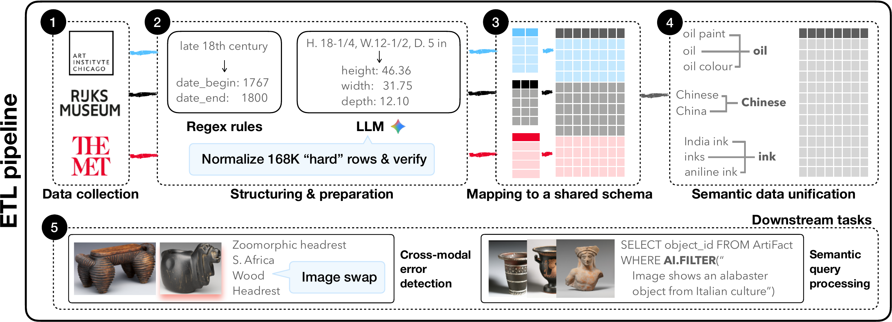
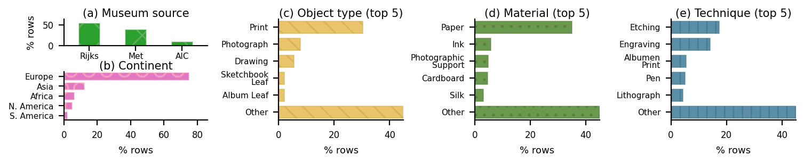
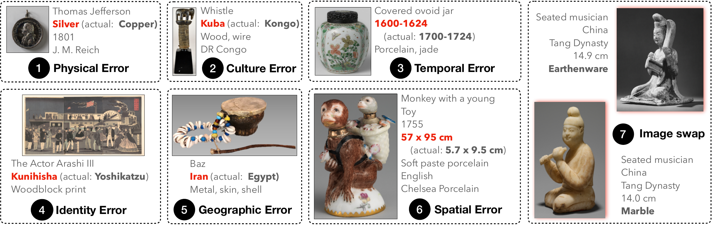

651,045 museum records pairing artwork images with structured metadata, collected from the Metropolitan Museum of Art, the Art Institute of Chicago, and the Rijksmuseum. Published at the NOVAS Workshop at VLDB 2026.
Overview
How It Works
ArtiFact is built through a 5-step Extract-Transform-Load (ETL) pipeline that collects, structures, normalizes, and deduplicates records from three institutions, then supports downstream tasks including error detection and semantic querying.
Data Collection & Downstream Tasks

Overview of the dataset generation process: an ETL pipeline ① collects, ② structures & prepares, ③ maps to a shared schema, and ④ performs semantic data unification across three cultural heritage institutions; the preprocessed dataset supports ⑤ downstream tasks including cross-modal error detection and semantic query processing.
Access
ArtiFact is freely available on HuggingFace Datasets and GitHub. Use the datasets
library to load it programmatically in seconds.
Source code for the ETL pipeline, error injection framework, and downstream tasks.
OlgaOvcharenko/ArtiFactfrom datasets import load_dataset # Load the full dataset ds = load_dataset("deem-data/ArtiFact") # Inspect available splits and columns print(ds) # Access the first record print(ds["train"][0])
For any questions, contact ovcharenko@tu-berlin.de.
Dataset
ArtiFact aggregates open-access records from three of the world's premier cultural institutions, retaining only records with public-domain image URLs.
Collected via the MET REST API across all 19 curatorial departments.
Collected via open-access JSON-LD files using the International Image Interoperability Framework (IIIF).
Collected via OAI-PMH and recursive JSON-LD linked data parsing.
Dataset Diversity

Distribution of 651,045 joint records across museum source, continent, object type, material, and technique.
Schema
Records from all three institutions are integrated into a single standardized schema spanning identifiers, temporal attributes, physical properties, cultural/geographic context, and artist metadata.
object_IDobject_nametitledescriptionsubjectsinscriptionsimage_urldate_begindate_enddate_begin_bcedate_end_bceperioddynastyreignmaterialstechniquesdimensions_jsonculturelocationartist_nameartist_roleartist_nationalityartist_date_beginartist_date_endError Taxonomy
To support multi-modal error detection benchmarking, ArtiFact includes a curated error taxonomy applied to 130,209 records with synthetically injected errors across 7 categories and 19 subcategories, informed by domain experts at the MET, AIC, and Rijksmuseum.
Injects material or technique anachronisms based on world knowledge, including interchanges between visually similar materials that frequently co-occur with the object type.
20,484 recordsSwaps culture labels between adjacent cultures or within the same continent — plausible but factually incorrect.
10,780 recordsShifts the creation date range by a random historical offset of ±100, ±200, or ±300 years.
8,992 recordsIntroduces artist attribution errors ranging from random swaps to swaps between artists sharing nationality, historical era, and primary specialization.
26,952 recordsExchanges locations between neighboring countries, maintaining a lexical overlap constraint to prevent trivially detectable swaps.
13,476 recordsScales dimension units by 10× and swaps aspect ratios between height and width.
15,837 recordsSwaps images identified via CLIP embeddings as visual twins — adversarial pairs from different contexts that are visually similar but contextually distinct.
33,688 recordsError Taxonomy Examples

Seven error categories are injected into 130,209 records to create a realistic evaluation benchmark for cross-modal error detection. Errors span physical (material/technique), cultural, temporal, identity (artist), geographic, spatial (dimensions), and visual (image swap) dimensions.
Applications
ArtiFact is designed to support a broad range of multi-modal data management research. We showcase two representative downstream tasks: cross-modal error detection and semantic query processing.
Detect inconsistencies between images and metadata using the 130K-record annotated benchmark.
A mini-benchmark of 5 semantic queries combining relational predicates over structured data with semantic operators over text and images.
The paired image–metadata structure supports cross-modal retrieval tasks: retrieve artworks by image similarity, by structured attributes, or by combined semantic-visual queries.
Citation
If you use ArtiFact in your research, please cite our paper:
@inproceedings{duarte2026artifact,
title = {{ArtiFact}: A Large-Scale Multi-Modal Cultural Heritage Dataset},
author = {Duarte, Luciano and Ovcharenko, Olga and Schelter, Sebastian},
booktitle = {NOVAS Workshop (Novel Optimizations for Visionary AI Systems) at VLDB 2026},
year = {2026},
url = {https://arxiv.org/abs/2606.09648}
}